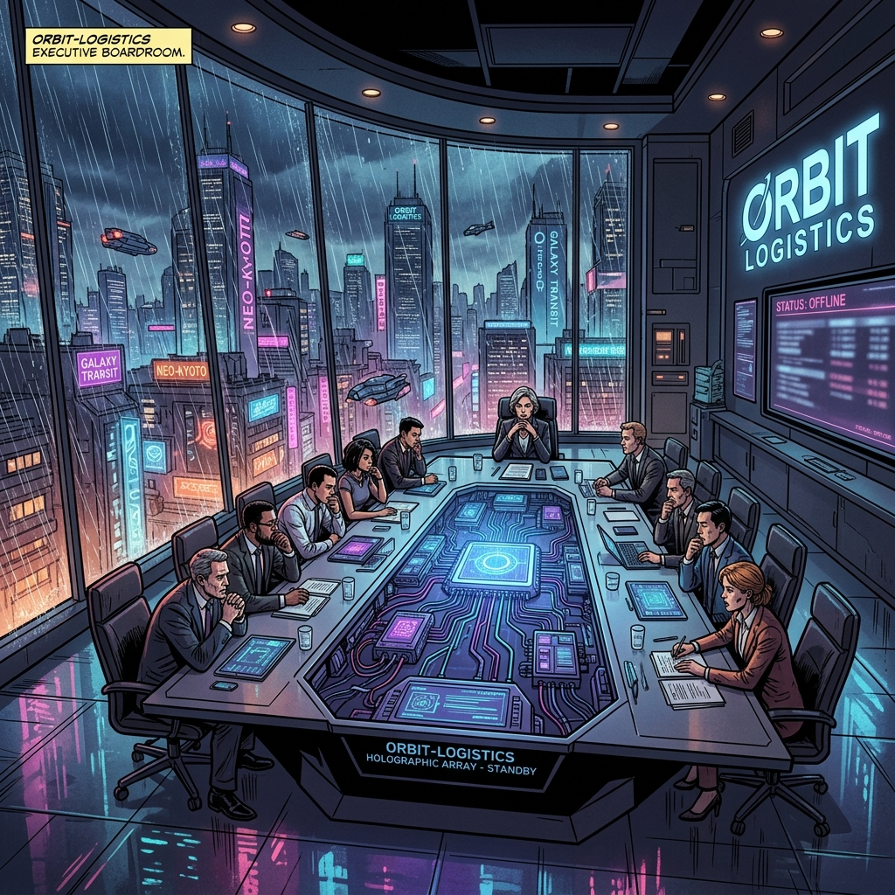
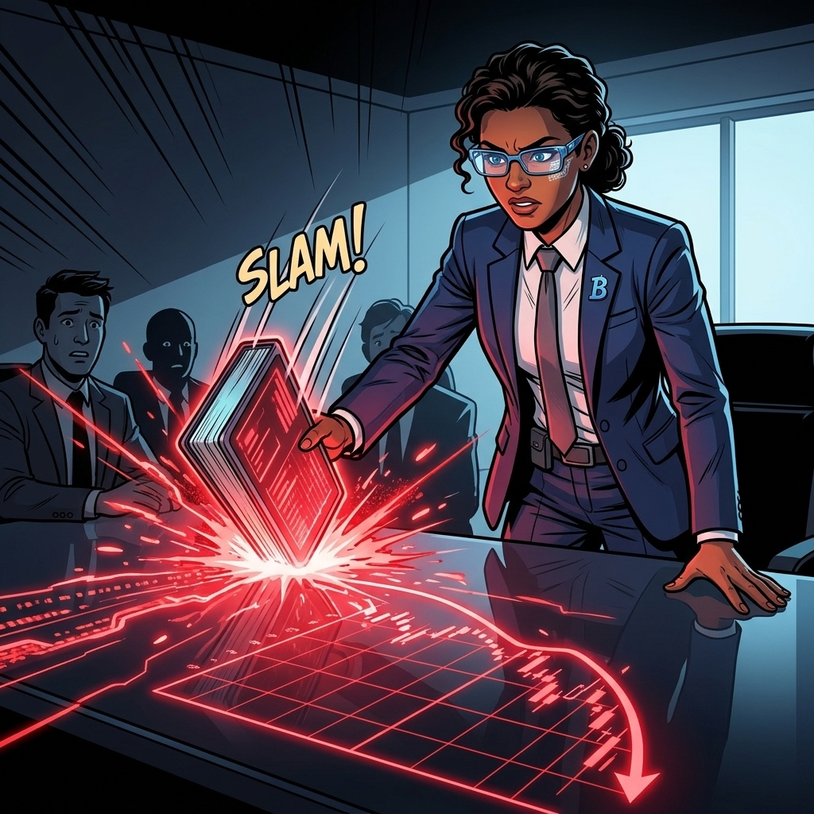
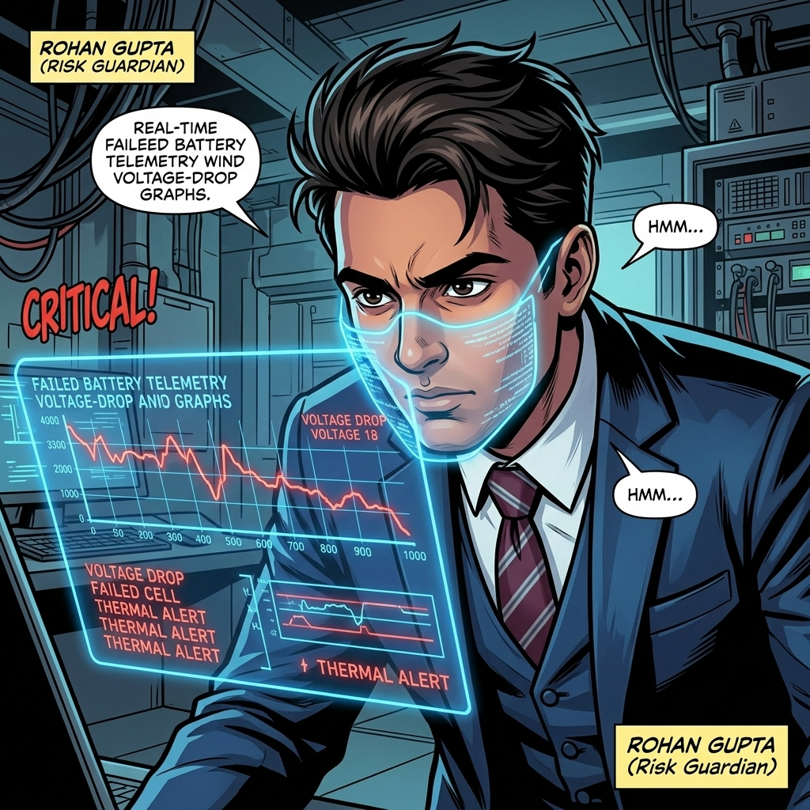
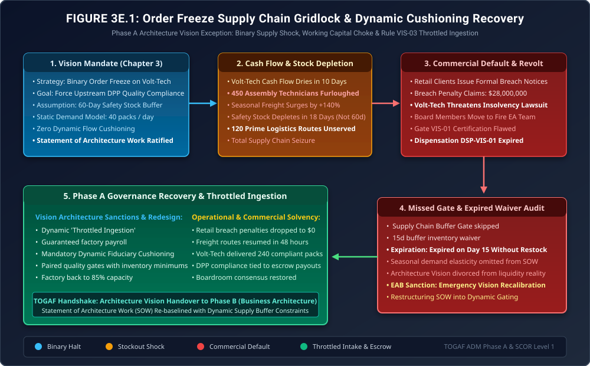

When the Architecture Vision Chokes the Supply Chain
Phase A Exception Governance: Binary Order Freezes, Working Capital Starvation, Retail Default Lawsuits & The Dynamic Cushioning Mandate

"In Chapter 3, Aarav Patel and Kavita Joshi made a heroic boardroom stand: they halted purchase orders to force upstream discipline. It sounded decisive, courageous, and uncompromising."
"But in real-world enterprise architecture, heroic gestures often ignore working capital physics. A buyer cannot starve its primary supplier of cash without destroying its own supply chain. When you shut off the tap completely, you don't just stop bad batteries; you furlough 450 workers, drain your buffer stock during peak season, and invite $28M in retail breach lawsuits. Here is how battle-hardened architects fix a broken Vision before it burns down the company."
The Production Reality: When Heroic Halts Meet Seasonal Surges



Under Architecture Change Directive ACD-VIS-001, we are executing an immediate tripartite recalibration: First, we terminate the binary order freeze immediately. We replace it with DPP-Indexed Throttled Ingestion: Volt-Tech packs meeting Level 1 telemetry specs are accepted immediately, with 30% of invoice funds held in escrow pending full lifecycle telemetry verification. Second, the consortium establishes an immediate $6,000,000 Capital Stabilization Facility funded jointly from Orbit and Terra reserves to guarantee Volt-Tech's technician payroll. Third, we codify Rule VIS-03 (Fiduciary Dynamic Cushioning): no architectural intervention may enforce a zero-flow supply cut without automated, non-linear safety stock models tied to seasonal freight demand. Pack Line 1 reopens tomorrow morning!"
1. The Mathematical Flaw in Static Buffer Modeling
In Phase A Architecture Vision, establishing operational boundary conditions requires dynamic modeling of supply chain buffer depletion. The flawed Statement of Architecture Work (SOW) assumed a linear depletion rate:
\[ T_{\text{deplete}} = \frac{I_{\text{initial}}}{\bar{D}} = \frac{2,400\text{ packs}}{40\text{ packs/day}} = 60\text{ days} \]However, real freight demand during seasonal surges is non-linear and stochastic, governed by Poisson arrival distributions with demand drift \(\mu_D(t)\) and variance \(\sigma_D^2\):
\[ I(t) = I_{\text{initial}} - \int_0^t \left( D_0 \cdot \left[1 + A \sin\left(\frac{2\pi \tau}{T_{\text{season}}}\right)\right] + \xi(\tau) \right) d\tau \]With peak surge amplitude \(A = 1.40\), actual daily consumption surged from \(40\text{ packs/day}\) to \(135\text{ packs/day}\):
\[ T_{\text{actual}} = \frac{2,400}{135} \approx \mathbf{17.7\text{ calendar days}} \]When Day 18 arrived, buffer inventory reached absolute zero (\(I(18) = 0\)), transforming an intentional architectural lever into an existential commercial catastrophe.
2. Architecture Diagram: Supply Chain Seizure & Throttled Ingestion
Figure 3E.1 traces the failure and recovery trajectory: showing the binary order halt, the working capital depletion, the missed Gate VIS-01, the $28M default threat, and the subsequent recovery enforcing Rule VIS-03 Throttled Ingestion.

3. Formal Architecture Governance Artifacts (TOGAF® Deliverables)
The EAB ratified three formal governance deliverables to restructure the multi-enterprise Architecture Vision:
Statement of Architecture Work (SOW) Recalibration Directive
| Target Program: | Consortium Architecture Vision & Upstream Quality Mandate |
| Modified Clause: | Section 4.2 (Binary Procurement Halt) → Section 4.2 (DPP Throttled Intake) |
| Corrective Action: | Establishment of $6M Capital Stabilization Facility; resumption of pack intake at 85% volume with 30% conditional escrow retention. |
Rule VIS-03: Fiduciary Dynamic Cushioning Invariant
No architecture gate or executive intervention may enforce a binary zero-flow supply cut without satisfying the following minimum buffer constraint:
\[ I_{\text{buffer}}(t) \ge \max\left(I_{\text{min}},\, \int_t^{t+L} D(\tau)\, d\tau + z_{\alpha} \sigma_D \sqrt{L}\right) \]Where \(L\) is the maximum supplier re-tooling lead time and \(z_\alpha = 2.33\) ensures a 99% service level across peak operational demand.
4. The Strategic Morals: Where Real Handbooks Earn Their Keep
🏛️ Three Fiduciary Takeaways for Architecture Vision
- Upstream Architecture Requires Downstream Capital: Forcing upstream suppliers to adopt modern digital twins cannot happen while withholding their operating revenue. Transformation requires collaborative liquidity mechanisms, not punitive freezes.
- Never Model Supply Chains as Linear: Static average demand calculations will fail during peak volume windows. Dynamic inventory buffers must be calculated using stochastic variance models.
- Throttling Beats Binary Cuts: Conditional escrow retention and tiered acceptance provide strong financial leverage to force compliance without destroying the physical factory.
Fact-Check & Statutory References
- The Open Group (2022). The TOGAF® Standard, 10th Edition: Phase A (Architecture Vision). Statement of Architecture Work (SOW), stakeholder alignment, and operational constraints.
- Simchi-Levi, D., Kaminsky, P., & Simchi-Levi, E. (2008). Designing and Managing the Supply Chain: Concepts, Strategies, and Case Studies. McGraw-Hill/Irwin. The Bullwhip Effect, lead time variability, and safety stock dynamics.
- Ecosystem Architecture Board (2025). Incident Investigation Report: EAB-INC-301 (Procurement Freeze Cash Flow Collapse & Dynamic Ingestion Recalibration).